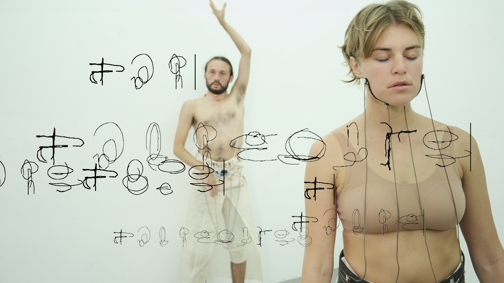

[ spin stitch sound "kick" ] for the posthumanist magazine

4 hours durational performance piece, developed as an outcome of an artistic research on AI, performance, live coding and e-textiles (Patterns in between intelligences). It was shown on March 29, 2023 at the transmediale studio /silent green in Berlin.
Developed a web-based synthesiser for Hannah Sawtell, used in workshops and performance with women interested in learning the basics of audio synthesis
This short performance project was developed as a prototype for the Link Masters application call in collaboration with Juan Felipe Amaya Gonzalez, Deva Schubert, Alex McLean, Mika Satomi and Berit Greinke. It was an attempt to think about use of AI and AI concept in a performance that involves live coding, e-textile sensors and improvisational movements. The final video performance was filmed in 2021 July in Berlin, with the live coders joining remotely from UK.
